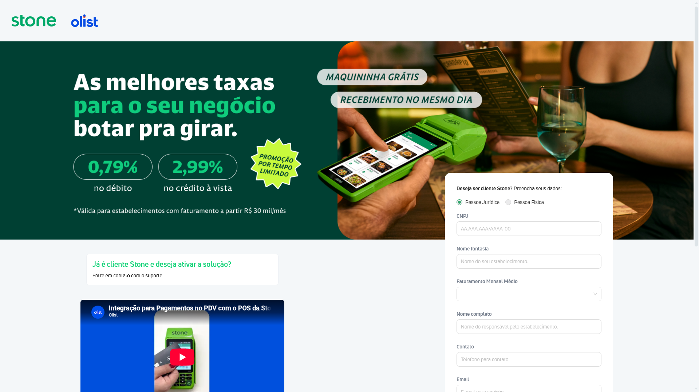
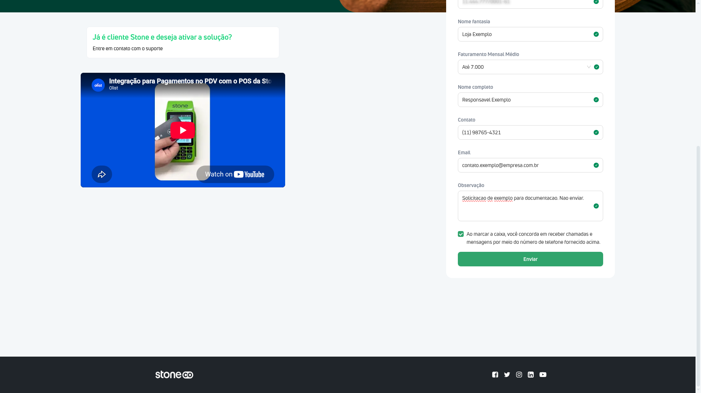

Solicitar uma nova conta Stone pelo cadastro da maquininha
Pelo cadastro da maquininha Stone no ERP da Olist, você pede uma conta Stone se ainda não é cliente. O link nova conta abre a página da Stone para informar os dados do estabelecimento e enviar a solicitação.
Pré-requisitos
- A área Integração Stone precisa estar instalada para abrir Cadastrar maquininha Stone. Na tela, ela pode aparecer como PREMIUM INSTALADA.
Importante
- Quem já é cliente Stone vê na página o aviso Já é cliente Stone e deseja ativar a solução? Entre em contato com o suporte.
Instruções
- Acesse Configurações > Configurações ERP > Finanças > Configurações das maquininhas de cartão.
- Clique em adicionar maquininha.

- Na área Integração Stone, clique em Cadastrar maquininha Stone.

- Clique em nova conta.

- Em Deseja ser cliente Stone?, selecione Pessoa Jurídica ou Pessoa Física.
- Preencha CNPJ, Nome fantasia, Faturamento Mensal Médio, Nome completo, Contato, Email e Observação. Em Faturamento Mensal Médio, selecione uma faixa da lista. Nenhum desses campos aparece marcado como obrigatório.
- Marque Ao marcar a caixa, você concorda em receber chamadas e mensagens por meio do número de telefone fornecido acima.

- Clique em Enviar.
Informações adicionais
- A página mostra condições comerciais e o vídeo Integração para Pagamentos no PDV com o POS da Stone.
- Pessoa Jurídica pode já vir selecionada no formulário.